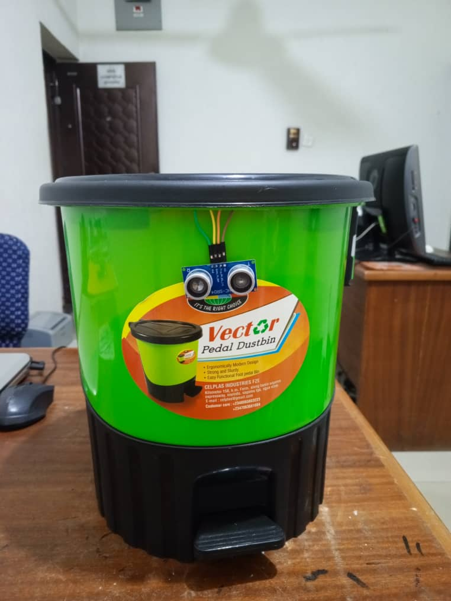
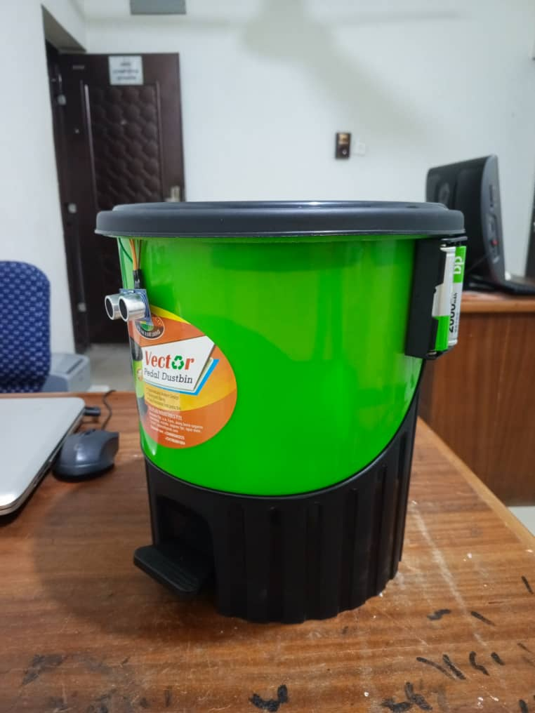
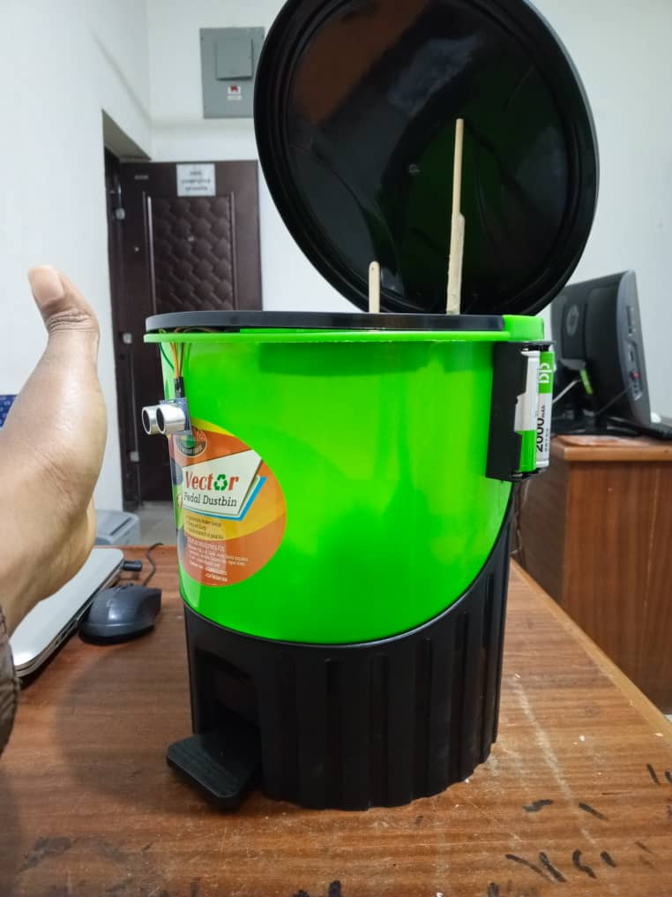

Smart bin
A hands-free waste bin built with Arduino and sensors, developed through each phase of the waterfall model.
Overview
The smart bin uses sensors and Arduino control logic to detect a user and open its lid without a touch, which improves sanitation in homes and offices. Building it with the waterfall model let students see every phase of the software engineering lifecycle in one small project.



Development approach
- Requirements analysis: define sensor type, lid logic and system goals.
- System design: draw the electronics schematic and mechanical layout.
- Implementation: write the Arduino logic and assemble the hardware.
- Testing: check sensor accuracy and servo movement.
- Deployment: run it in a controlled environment.
- Maintenance: tune detection thresholds and alignment.
Hardware
Arduino Uno, ultrasonic sensor, IR sensor, servo motor, LED indicators and a plastic container.
Sample code
// Smart Bin System - simplified
#include <Servo.h>
Servo flap;
int irPin = 2;
void setup() {
pinMode(irPin, INPUT);
flap.attach(9);
}
void loop() {
int detected = digitalRead(irPin);
if (detected == LOW) {
flap.write(90); // open
delay(1500);
flap.write(0); // close
}
}